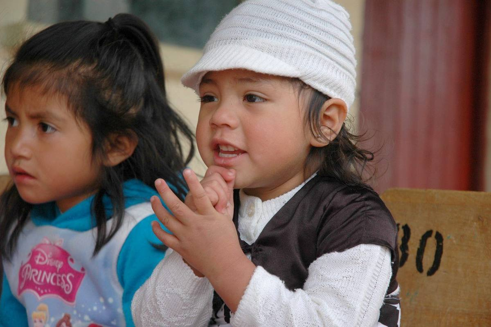

Tecnología y conectividad
232 equipos entregados en 2026
Equipos de trabajo, antenas de internet y Chispa, un tutor de inteligencia artificial, para seguir aprendiendo también en la aldea.
Conoce el programaTotonicapán, Guatemala· acompañando a la niñez del altiplano por décadas

Aprender en comunidad, cada semana. Es la primera etapa del camino GuateStar.

Club Extra reúne a niñas y niños en grupos de aprendizaje en su propia comunidad, donde cada quien avanza a su ritmo con actividades educativas y tecnológicas.
No hace falta salir de la aldea para aprender con calidad. El programa complementa la escuela con refuerzo académico, tecnología y mentoría, y forma en valores: amor, integridad, innovación, colaboración y esperanza.
Todo empezó hace diez años con siete niños en Chuixacol. En 2026, 534 niños de 285 familias se inscribieron en ocho comunidades.
Algunas comunidades abrieron después de junio, así que la asistencia aún crece.
GuateStar diseñó este método propio de cinco pasos, y en él se basan las actividades de Club Extra. Los niños no solo reciben información: conectan con un problema, lo resuelven, experimentan, defienden sus ideas y mejoran lo que hicieron.

| Sitio | Inscritos | Asisten por semana | Familias |
|---|---|---|---|
| Nimasac · Básico / Instituto | 114 | 89 | 52 |
| Los Itzep | 93 | 71 | 45 |
| Patulup | 85 | 71 | 43 |
| Nimasac · Primaria | 75 | 57 | 26 |
| Pueblo Viejo | 50 | 46 | 26 |
| Salitre | 49 | 46 | 21 |
| Juan Wesley | 30 | 26 | 15 |
| Esmirna | Sin registro | 31 | 16 |
| San Bartolo | Sin registro | 6 | 4 |
| Total | 534 | 443 | 285 |
La asistencia es un promedio semanal después de junio, sin contar las semanas sin Club Extra. El total de inscritos incluye un sitio sin registro semanal.

Cuando las familias de Nimasac conocieron Club Extra, pidieron que sus hijos de primaria también participaran. Se abrieron 20 lugares y el primer sábado llegaron más de 40 niños.
Leer la historia232 equipos entregados en 2026
Equipos de trabajo, antenas de internet y Chispa, un tutor de inteligencia artificial, para seguir aprendiendo también en la aldea.
Conoce el programa
80 becados en 2026
Becas que permiten seguir estudiando desde preprimaria hasta la universidad o un curso técnico.
Conoce el programa
14 jóvenes completaron el programa
Retos empresariales durante 16 semanas para que cada joven dé el paso final hacia la universidad.
Conoce el programa
17 jóvenes sirviendo cada semana
De asistente a voluntario y de voluntario a facilitador: liderazgo que se aprende sirviendo.
Conoce el programa
Ellos ya tienen la curiosidad y las ganas. Tu apoyo les ayuda a seguir adelante, junto a su familia y su comunidad.